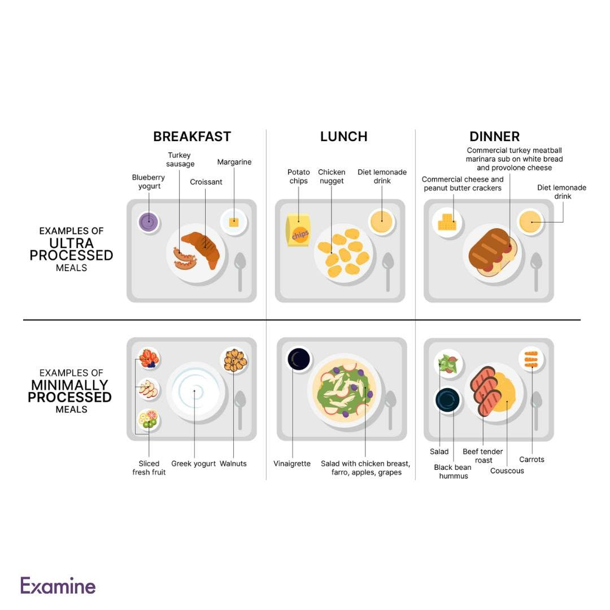

(no text — see the shared post below)
In this randomized controlled crossover trial in young men, eating a diet of entirely ultraprocessed foods for 1 week resulted in more weight gain than a diet without any ultraprocessed food.
This was a small study, but its results are consistent with multiple observational studies and a previous randomized controlled trial. Collectively, evidence suggests that consuming ultraprocessed food can increase weight gain.
Ultraprocessed foods are generally defined as the result of multiple stages of processing and are made of substances derived from food like white flour, sugar, and oil and food additives like flavorings, preservatives, and emulsifiers. These foods tend to be high in ingredients like fat, salt, and sugar, which can increase the likelihood of overconsumption. Examples of ultraprocessed foods include potato chips, doughnuts, soda, and most ice cream.
However, the term “ultraprocessed food” paints with a broad brush. Not all ultraprocessed foods are created equal, so their health effects can vary. In fact, some ultraprocessed foods are probably fine and can even be beneficial for certain health goals. As always, context is key.
Learn more:
 Examine.comDo ultraprocessed foods promote weight gain? - Study SummaryIn this randomized controlled crossover trial in young men, eating a diet of ultraprocessed foods (including soda, doughnuts, and french fries) for 1 week resulted in weight gain compared to a diet without any ultraprocessed food.examine.com
Examine.comDo ultraprocessed foods promote weight gain? - Study SummaryIn this randomized controlled crossover trial in young men, eating a diet of ultraprocessed foods (including soda, doughnuts, and french fries) for 1 week resulted in weight gain compared to a diet without any ultraprocessed food.examine.com
#examined #upf #weight #fat #muscle

